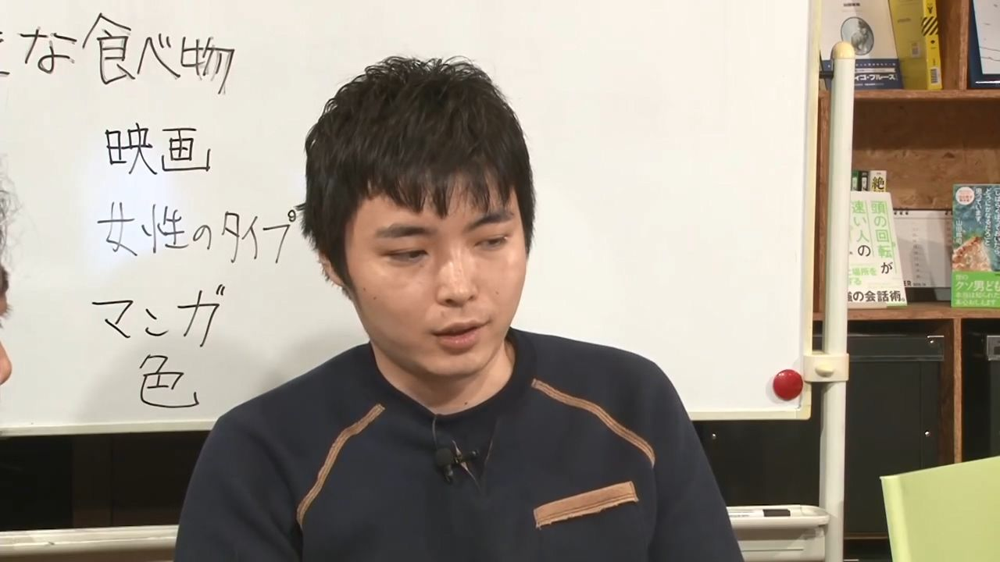

ONE
ONE — псевдоним японского мангаки, ставшего известным из-за перерисованной версии своей веб-манги One-Punch Man от Юсукэ Мураты.
ONE публикует One-Punch Man на своём собственном веб-сайте без официального издателя и Mob Psycho 100 в онлайн версии Weekly Shonen Sunday.
О его личности и частной жизни известно немного. ONE родился 16 сентября 1989 года в городе Коносу, префектура Сайтама.

Работы
«Ванпанчмен» (яп. ワンパンマン Вампамман) (с 2009)
«Моб Психо 100» (яп. モブサイコ100 Мобу Сайко хяку) (2012—2017)
Makai no Ossan (яп. 魔界のオッサン Макай но оссан, «Старикан из мира духов») (2012—2013)
Dotou no Yuushatachi (яп. 怒涛の勇者達 Дото: но ю:ся-тати, «Герои бушующих волн») (совместно с Юсукэ Муратой; 2012)
Dangan Tenshi Fan Club (яп. 弾丸天使ファンクラブ Данган тэнси фанкурабу, «Фан-клуб ангелов пуль») (совместно с Юсукэ Муратой; 2012)
Gokiburi Buster (яп. ゴキブリバスター Гокибури басута:, «Уничтожитель Гокибури») (совместно с Юсукэ Муратой; 2015)
Интересные факты
ONE начал публиковать первый рассказ в Shukan Shonen VIP.[22]
ONE и его приятели действовали в рамках группы под названием 超合金黒光 (Чугукюн Куробикари, приблизительный перевод
(Супер Золотой чёрный Свет), и именно от этого произошло имя героя S класса в Ванпанчмене, Сверхлитой Темноблеск (超合金クロビカリ).
ONE любит трогательные фильмы, такие как "Встань рядом со мной".
Его любимый японский фильм - "Gachi Boy" (английское название: "Wrestling with a Memory”). Это был первый фильм, который заставил его плакать.
У ONE нет любимых персонажей.
Предпочтения ONE в еде:
Икура (икра лосося), авокадо с рисом и виноградом.
ONE говорит, что если он может съесть немного икуры с рисом, то ему ничего, кроме этого, не нужно.
Также ONE любит спагетти с икрой трески.
У ONE-а есть сестра.
Титулы, награды, премии
В 2016 году One-Punch Man занял первое место в номинации «лучшая манга» и получил премию от SUGOI JAPAN Award. И ONE, и Юсукэ Мурата
присутствовали на вручении награды.